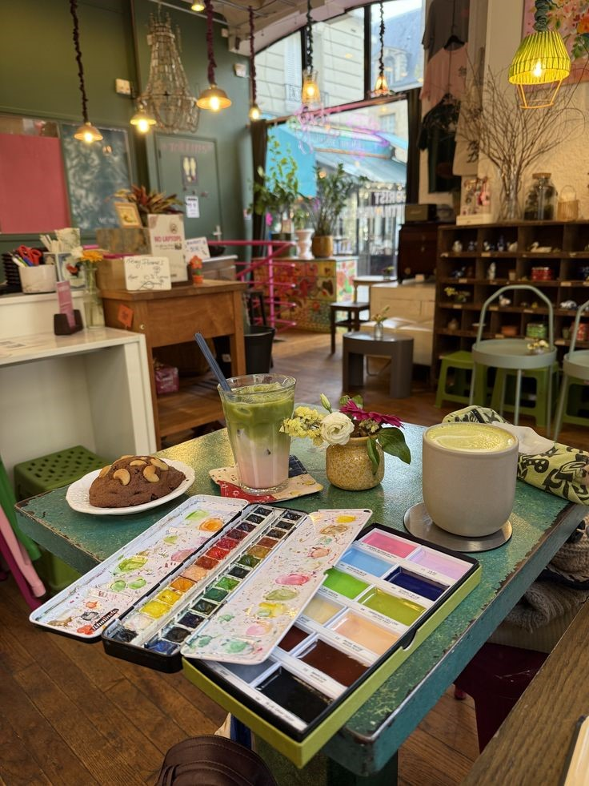
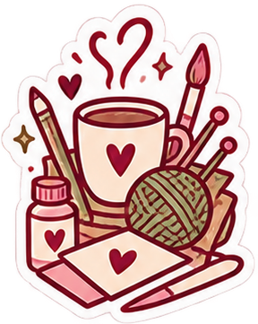
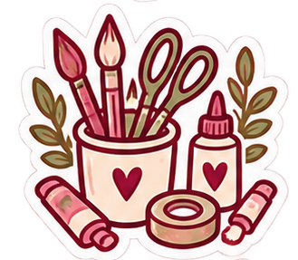
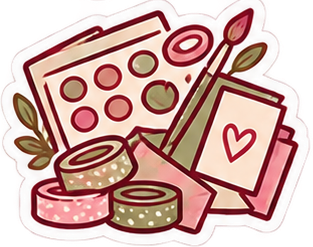
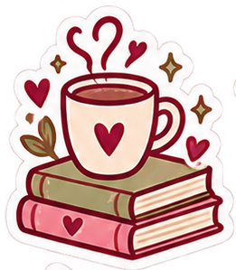
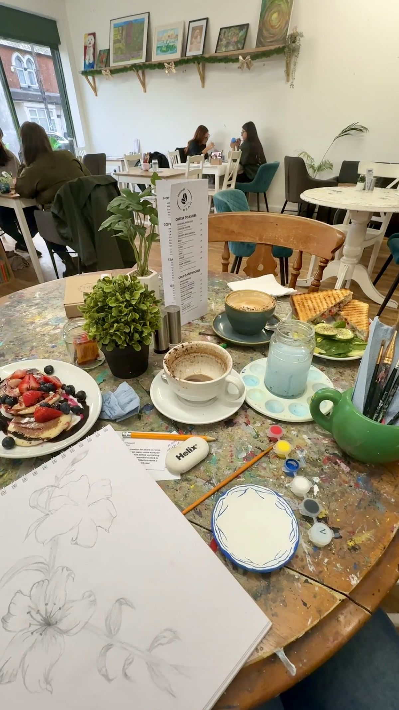
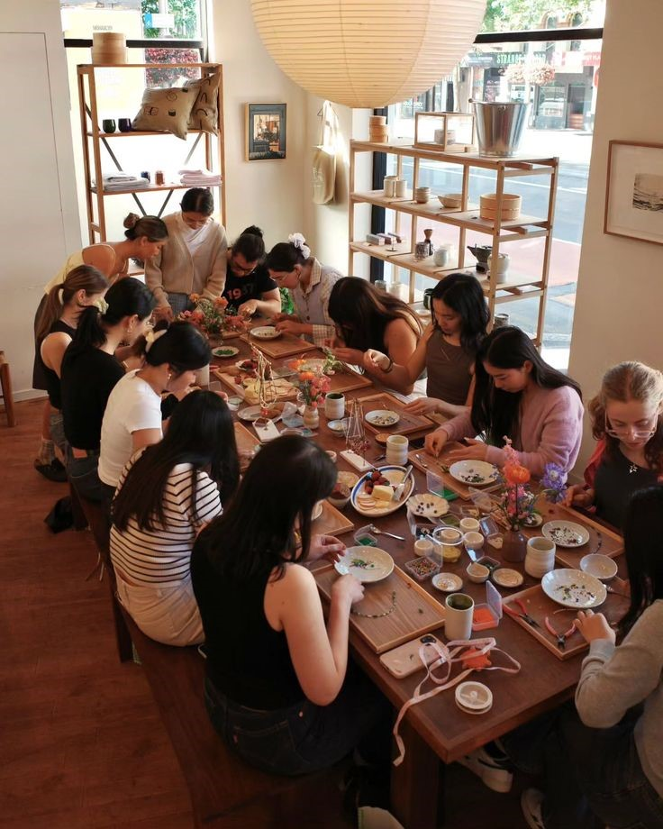
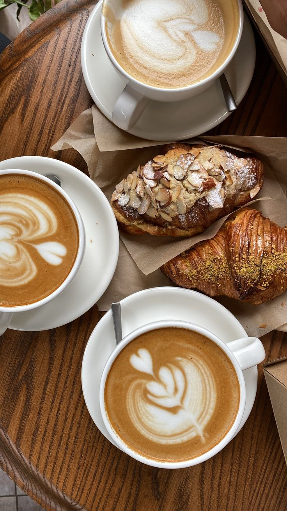

Káva.
Tvorenie.
Chvíľa pre seba.
Príď si vychutnať kávu, oddýchnuť si a
vytvoriť niečo pre radosť.
Viac ako kaviareň
Pomôcky aj materiály ťa čakajú u nás. Naše police sú plné kreatívnych potrieb – od farieb na plátno cez hlinu až po vosk na sviečky.
Stačí si vybrať aktivitu, objednať si obľúbený nápoj a užívať si tvorivý proces.

Čo v CUP of CRAFTS ponúkame?

Voľné tvorenie
Príď si tvorivo oddýchnuť – vyber si techniku, použij materiály a vytvor niečo vlastné v príjemnom prostredí.

Skupinové tvorenie
Pre oslavy, team buildingy a spoločné chvíle s priateľmi. Rezervácia pre celú partiu je jednoduchá a rýchla.

Workshopy s lektorom
Nauč sa novú techniku pod vedením odborníka a odnes si hotový výrobok aj nový zážitok.

Kaviareň
Užívaj si kvalitnú kávu, čaj, domáce limonády, koláčiky a malé jedlá v príjemnej atmosfére.

Voľné tvorenie
Od maľovania po modelovanie – vyber si aktivitu a uži si tvorivý relax. Nemusíš sa nikde hlásiť, stačí prísť kedykoľvek počas otváracích hodín.
Pre väčšie skupiny (6 – 20 osôb) si u nás môžete rezervovať stôl vopred.
Tvorenie
Workshopy s lektorom
Chceš sa naučiť novú techniku pod vedením odborníka? Príď na naše tematické kurzy – od výroby sviečok až po akvarel.
Odnesieš si domov vlastný výrobok aj nový zážitok.
Workshopy
Malá pauza na niečo dobré
Ku každej kreatívnej chvíľke patrí aj šálka dobrej kávy či čaju. Dopraj si chvíľku pre seba a ochutnaj naše domáce limonády, čerstvé koláčiky alebo niečo malé pod zub.
Kaviareň